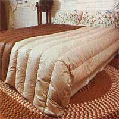
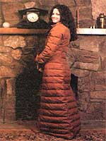
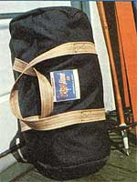

The Sewing Kit Solution
November/December 1979
It'll take a little talent and patience, but you can save money and fill your outdoor clothing and equipment needs with . . .
Bein' in the great outdoors is always much more enjoyable when you have the proper clothing and equipment ... but quality goods bring premium prices at the local sporting emporium or department store and such expenses aren't always easy to squeeze into most people's already tight budgets. Furthermore-while MOTHER thinks it's great that some people can whip up a hooded parka or sleeping bag from scratch-not everyone has that kind of sewing ability.
The answer to the problem of obtaining moderately priced, quality outdoor gear may be the "sew-it-yourself kit", which is made up of premeasured and precut materials (including all the thread and fasteners you'll need to put the project together), and contains step-by-step stitchery instructions. Besides saving you between 30% and 50% compared to similar ready-made's, such custom construction packages offer the satisfaction of doingmostof-it-yourself . . . allow you to add personal touches like fur trims, appliques, yokes, embroidery, and contrasting colors ... and even help you develop the kind of sewing skills you'll need to start from scratch in the future!
TIME AND SPACE
But, while "prefab" kits will definitely save you money and-in the end-probably provide products that are better constructed than their factory-made counterparts ... they can be time-consuming projects to assemble. Also, though there are a number of "sew-easy" items available, some of the more advanced kits require a great deal of stitchery skill.
Then, too, unless you're making small items (such as bicycle or tote bags, booties, or mittens), you'll need plenty of room to work . . . because considerable quantities of material are involved in the construction of a tent, comforter, sleeping bag, or long coat. And, despite the fact that some companies enclose their pre-measured down in convenient plastic pouches, you'll likely still have a small blizzard on your hands when you actually pack your garment with insulation.
One time-consuming job you'll encounter when working with a great many kits is "searing the seams". You see, many sew-it-yourself items are made from rip-stop nylon or nylon taffeta, and it's absolutely imperative to apply heat to the cut edges of such materials to prevent their unraveling. This means that-before seaming'em together-the pieces of fabric have to be fused all around with a candle flame (and then re-seared if you're working, for example, on a curved seam that has to be clipped in order for it to lie flat). This sealing process must be done slowly and carefully in order not to burn your product or yourself.
AN IN-HOUSE TEST
We decided to find out just how much work and talent it takes to assemble some of these attractive items from moneysaving kits. Using four different packages from Frostline (one of the leading manufacturers of sew-it-yourself outdoor clothing and equipment), a quartet of MOTHER's helpers-folks with varying degrees of sewing skill-constructed the items pictured here: a small (16-1/2" X 9-1/2") duffel bag . . . a "High Country" down vest ... a "Decorator" down-filled, twin-size comforter ... and a fashionable "Down Around" maxi coat.
Babs, who made the duffel bag, knows the rudiments of sewing, but doesn't claim to be an expert by a long shot. Though the kit took three "spare time" evenings to put together, she found the bag quite easy to make ... and was pleased with the results!
Johnnie, on the other hand, is an experienced dressmaker. Yet she had to spend a number of evening hours-plus the good part of one weekend-working on her fairly complicated down vest with its "hand-warmer" pockets. The cozy, solidly constructed end product, however, seems to confirm that it was time well spent.
Pat assembled the comforter in the photo-using her 1911, hand-operated Puff sewing machine-in approximately eight hours. Since the bedcover's fabric (Trinyl) didn't have to be seared (though Pat did turn in all the edges twice to prevent any chance of ravels) and involved straight seams, her "just basic" sewing knowledge was quite adequate ... although the task of getting the down into the comforter's "tubes" took a fair bit of patience. (Pat claims to have absolute proof that the kit's down is "the real thing", though: When she brought the package home, her bird dog immediately "pointed" it!)
Our fourth stitchery "guinea pig", Celeste, had made a Frost-line down jacket some four years before, and-since she sews most of her own clothes-didn't hesitate to take on the myriad complications of making a down-filled maxi coat. Even so, she was a little taken aback by the sheer quantity of material and complexity of parts she had to deal with .. . the more than two hours it took just to sear the taffeta material ... and the patience required to get the proper amount of down inserted and distributed evenly before machine-quilting the garment.
Though she found the instructions "pretty good", Celeste thinks some important little details (that wouldn't be "common knowledge" to any but a very experienced seamster or seamstress) were left out. However, after almost 30 hours of work, she had a gorgeous down coat for less than half the price she'd have paid in a store.
THE PERFECT WINTER PROJECT
Our conclusions? There's no doubt that -if you pick a project to match your skills -the do-it-at-home sewing kits can give you a sturdy, stylish piece of clothing or outdoor equipment at about half the price of its ready-made equivalent. Of course, the stitchery will occupy a number of hours of your "spare" time. But there's a big stretch of long winter nights ahead . . . and these practical and personalized outfits, packs, and camping-gear pieces could be the perfect way to fill up those evenings with some projects that will make you "right proud" of yourself!
EDITOR'S NOTE: More information on the above kits can be had by writing Frostline, Dept. TMEN, Frostline Circle, Denver, Colorado 80241.
|
 Spend cozy nights beneath this down-filled comforter |
 When the cold winds blow, you can don this vest...and go! |
 In a store you'd pay twice the price for this maxi coat. |
|
 Sew a sturdy backpark or duffel in your spare time. |
|
|